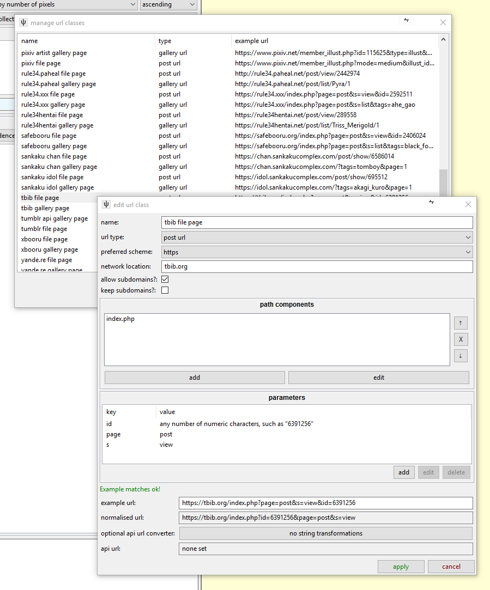
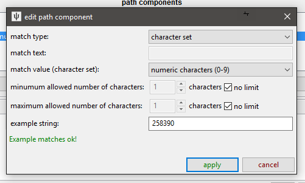

<---- Back to the introduction
url classes
The fundamental connective part of the downloader system is the 'URL Class'. This object identifies and normalises URLs and links them to other components. When the client handles or presents a URL, it consults the respective URL Class on what to do.
the types of url
For hydrus, an URL is useful if it is one of:
File URL
-
This returns the full, raw media file with no HTML wrapper. They typically end in a filename like http://safebooru.org//images/2333/cab1516a7eecf13c462615120ecf781116265f17.jpg, but sometimes they have a more complicated fetch command ending like 'file.php?id=123456' or '/post/content/123456'.
These URLs are remembered for the file in the 'known urls' list, so if the client happens to encounter the same URL in future, it can determine whether it can skip the download because the file is already in the database or has previously been deleted.
It is not important that File URLs are matched. The client does not need to match a File URL in order to download it (and will typically assume unmatched URLs are File URLs), but you might want to particularly specify them if you discover File URLs are being confused for Post URLs or something.
Post URL
-
This typically contains one File URL and some metadata like tags. They sometimes present multiple sizes (like 'sample' vs 'full size') of the file or even different formats (like 'ugoira' vs 'webm'). The Post URL for the file above, http://safebooru.org/index.php?page=post&s=view&id=2429668 has this 'sample' presentation. Finding the best File URL in these cases can be tricky!
This URL is also saved to 'known urls' and can be skipped if it has previously been downloaded. It will also appear in the media viewer as a clickable link. Since the user may want to load these in their browser, it is important that they stay intact and valid.
Gallery URL
- This presents a list of Post URLs or File URLs. They often also present a 'next page' URL and sometimes say when the files it links were posted, which can be used to calculate how fast files are being posted. It could be a page like http://safebooru.org/index.php?page=post&s=list&tags=yorha_no._2_type_b&pid=0 or an API URL like http://safebooru.org/index.php?page=dapi&s=post&tags=yorha_no._2_type_b&q=index&pid=0.
Watchable URL
- This is the same as a Gallery URL but represents an ephemeral page that receives new files much faster than a gallery but will soon 'die' and be deleted. For our purposes, this typically means imageboard threads.
{kind=link}
the components of a url
For our purposes, a URL string has four parts:
- Scheme: "http" or "https"
- Location/Domain: "safebooru.org" or "i.4cdn.org" or "cdn002.somebooru.net"
- Path Components: "index.php" or "tesla/res/7518.json" or "pictures/user/daruak/page/2" or "art/Commission-animation-Elsa-and-Anna-541820782"
- Query Parameters: "page=post&s=list&tags=yorha_no._2_type_b&pid=40" or "page=post&s=view&id=2429668"
So, let's look at the 'edit url class' panel, which is found under network->manage url classes:

A TBIB File Page like https://tbib.org/index.php?page=post&s=view&id=6391256 is a Post URL. Let's go over the four components again:
Scheme
-
TBIB supports http and https, so I have set the 'preferred' scheme to https. Any 'http' TBIB URL a user inputs will be automatically converted to https.
Location/Domain
-
For File URLs, the domain is always "tbib.org".
The 'allow' and 'keep' subdomains checkboxes let you determine if a URL with "rule34.booru.org" will match a URL Class with "booru.org" domain and if that subdomain should be remembered going forward. In the booru.org case, the subdomain is very important, and removing it breaks the URL, but in cases where a site farms out File URLs to CDN servers on subdomains (like randomly serving a mirror of "https://muhbooru.org/file/123456" on "https://srv2.muhbooru.org/file/123456") and removing the subdomain still gives a valid URL, you do not wish to keep the subdomain. As it is, TBIB does not use subdomains, so these options do not matter in this case.
I am not totally happy with how allow and keep subdomains work, so I may replace this in future.
Path Components
-
TBIB just uses a single "index.php" on the root directory, so the path is not complicated. Were it longer (like "gallery/cgi/index.php", we would add more ("gallery" and "cgi"), and since the path of a URL has a strict order, we would need to arrange the items in the listbox there so they were sorted correctly.
Query Parameters
-
TBIB's index.php takes many query parameters to render different page types. Note that the Post URL uses "s=view", while TBIB Gallery URLs use "s=list". In any case, for a Post URL, "id", "page", and "s" are necessary and sufficient.
This URL Class will be assigned to any URL that matches the location, path, and query. Missing components in the URL will invalidate the match but additonal components will not!
For instance:
- URL A: https://8ch.net/tv/res/1002432.html
- URL B: https://8ch.net/tv/res
- URL C: https://8ch.net/tv/res/1002432
- URL D: https://8ch.net/tv/res/1002432.json
- URL Class that looks for "(characters)/res/(numbers).html" for the path
Only URL A will match
And:
- URL A: https://boards.4chan.org/m/thread/16086187
- URL B: https://boards.4chan.org/m/thread/16086187/ssg-super-sentai-general-651
- URL Class that looks for "(characters)/thread/(numbers)" for the path
Both URL A and B will match
And:
- URL A: https://www.pixiv.net/member_illust.php?mode=medium&illust_id=66476204
- URL B: https://www.pixiv.net/member_illust.php?mode=medium&illust_id=66476204&lang=jp
- URL C: https://www.pixiv.net/member_illust.php?mode=medium
- URL Class that looks for "illust_id=(numbers)" in the query
Both URL A and B will match, URL C will not
If multiple URL Classes match a URL, the client will try to assign the most 'complicated' one, with the most path components and then query parameters.
Given two example URLs and URL Classes:
- URL A: https://somebooru.com/post/123456
- URL B: https://somebooru.com/post/123456/manga_subpage/2
- URL Class A that looks for "post/(number)" for the path
- URL Class B that looks for "post/(number)/manga_subpage/(number)" for the path
URL A will match URL Class A but not URL Class B and so will receive A.
URL B will match both and will receive URL Class B as it is more complicated.
This situation is not common, but I expect it to be an issue with Pixiv, where some Post URLs link to a subset of manga pages that have their own gallery system, wew.
string matches
As you edit these components, you will be presented with the Edit String Match Panel:

This lets you set the type of string that will be valid for that component. If a given path or query component does not match the rules given here, the URL will not match the URL Class. Most of the time you will probably want to set 'fixed characters' of something like "post" or "index.php", but if the component you are editing is more complicated and could have a range of different valid values, you can specify just numbers or letters or even a regex pattern. If you try to do something complicated, experiment with the 'example string' entry to make sure you have it set how you think.
Don't go overboard with this stuff, though--most sites do not have super-fine distinctions between their different URL types, and hydrus users will not be dropping user account or logout pages or whatever on the client, so you can be fairly liberal with the rules.
normalising urls
Different URLs can give the same page. The http and https versions of a URL are typically the same, and "http://site.com/index.php?s=post&id=123456" results in the same content as "http://site.com/index.php?id=123456&s=post", and "https://e621.net/post/show/1421754/abstract_background-animal_humanoid-blush-brown_ey" is the same as "https://e621.net/post/show/1421754".
Since we are in the business of storing and comparing URLs, we want to 'normalise' them to a single comparable beautiful value. You see a preview of this normalisation on the edit panel.
Gallery and Watchable URLs are not compared, so a normalise call for them only switches their http/https to the preferred value, but File and Post URLs will cut out any surplus path or query components and will alphabetise the query arguments as well.
Since File and Post URLs will remove anything surplus, be careful that you not leave out anything important in your rules. Make sure what you have is both necessary (nothing can be removed and still keep it valid) and sufficient (no more needs to be added to make it valid). It is a good idea to try pasting the 'normalised' version of the example URL into your browser, just to check it still works.
gallery rules do not need to be sufficient
Advanced--feel free to skip for now
For Gallery URLs, however, it can sometimes be useful to specify just a set of necessary rules. This saves your time and covers a broader set of URLs like these:
- https://www.hentai-foundry.com/pictures/user/Sparrow/scraps/page/3
- https://www.hentai-foundry.com/pictures/user/Sparrow/scraps/page/1
- https://www.hentai-foundry.com/pictures/user/Sparrow/scraps (note that this gives the same result as the /page/1 URL)
Rather than making two rules--one with the additional "/page/(number)" and one without--you can just make one for "pictures/user/(characters)/scraps", which will match all three examples above.
While hydrus downloaders tend to generate valid first page URLs with something like "/page/1" or "pid=0" or "index=0", the sites themselves tend to link a 'bare' URL to a user browsing with a mouse. If you demand the 'page' or 'index' part in your Gallery URL Classes, a user who finds a nice gallery and tries to drop the first page's URL, as the site presented it, onto the client will only get a 'Couldn't find a URL Class for that!' error.
But if there isn't a nice way to create a single non-ambiguous class, just make multiple.
api urls
If you know that a URL has an API backend, you can tell the client to use that API URL when it fetches data. The API URL needs its own URL Class.
To define the relationship, click the "String Converter" button, which gives you this:

You may have seen this panel elsewhere. It lets you convert a string to another over a number of transformation steps. The steps can be as simple as adding or removing some characters or applying a full regex substitution. For API URLs, you are mostly looking to isolate some unique identifying data ("m/thread/16086187" in this case) and then substituting that into the new API path. It is worth testing this with several different examples!
When the client links regular URLs to API URLs like this, it will still associate the human-pretty regular URL when it needs to display to the user and record 'known urls' and so on. The API is just a quick lookup when it actually fetches and parses the respective data.